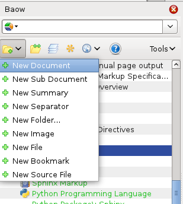
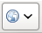
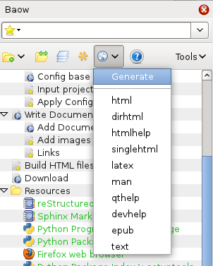
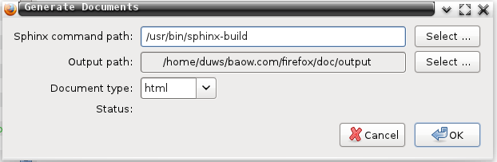
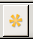

|
|
English 简体中文 |
Quick install step :
- Install Firefox web browser .
- Install baow add-on.
If you want to generate web pages with Sphinx tools:
- Install Python Programming Language .
- Install Python Package: Sphinx .
Quick start :
Open Firefox browser, and select menu Baow ‣ Show in Sidebar
Click menu New Document from the sidebar, and input title dialog, then some text in new opened tab editor, and click Save button.

Click button  from the sidebar.

Select your sphinx build command path, and output path, click Ok . This path in Windows system like this:
C:\Python27\Scripts\sphinx-build.exeIn Linux or BSD system like this
/usr/bin/sphinx-build
OK, you get full features web documents. If you want to continue get more goods of Baow, you should create a project by click management button  , and start your real documents writing.